Данный материал содержит геометрические фигуры с измерениями. Приведённые измерения являются приблизительными и могут не совпадать с измерениями в реальной жизни.
Содержание урока
- Периметр геометрической фигуры
- Площадь геометрической фигуры
- Площадь прямоугольника
- Площадь квадрата
- Обозначения
- Перевод единиц измерения площади
- Единицы измерения площади земельных участков
- Прямоугольный параллелепипед и куб
- Объём геометрической фигуры
- Перевод единиц измерения объёма
- Таблица квадратов
- Таблица кубов
- Задания для самостоятельного решения
Периметр геометрической фигуры
Периметр геометрической фигуры — это сумма всех её сторон. Чтобы вычислить периметр, нужно измерить каждую сторону и сложить результаты измерений.
Вычислим периметр следующей фигуры:
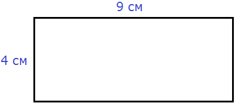
Это прямоугольник. Детальнее мы поговорим об этой фигуре позже. Сейчас просто вычислим периметр этого прямоугольника. Длина его равна 9 см, а ширина 4 см.
У прямоугольника противоположные стороны равны. Это видно на рисунке. Если длина равна 9 см, а ширина равна 4 см, то противоположные стороны будут равны 9 см и 4 см соответственно:
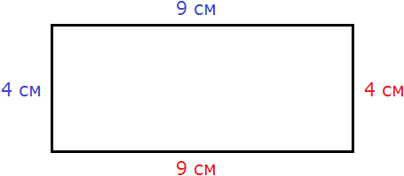
Найдём периметр. Для этого сложим все стороны. Складывать их можно в любом порядке, поскольку от перестановки мест слагаемых сумма не меняется. Периметр часто обозначается заглавной латинской буквой P (англ. perimeters). Тогда получим:
P = 9 см + 4 см + 9 см + 4 см = 26 см.
Поскольку у прямоугольника противоположные стороны равны, нахождение периметра записывают короче — складывают длину и ширину, и умножают её на 2, что будет означать «повторить длину и ширину два раза»
P = 2 × (9 + 4) = 18 + 8 = 26 см.
Квадрат это тот же прямоугольник, но у которого все стороны равны. Например, найдём периметр квадрата со стороной 5 см. Фразу «со стороной 5 см» нужно понимать как «длина каждой стороны квадрата равна 5 см»
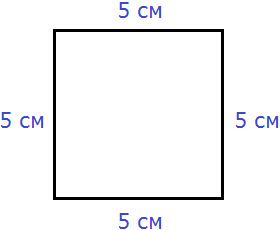
Чтобы вычислить периметр, сложим все стороны:
P = 5 см + 5 см + 5 см + 5 см = 20 см
Но поскольку все стороны равны, вычисление периметра можно записать в виде произведения. Сторона квадрата равна 5 см, и таких сторон 4. Тогда эту сторону, равную 5 см нужно повторить 4 раза
P = 5 см × 4 = 20 см
Площадь геометрической фигуры
Площадь геометрической фигуры — это число, которое характеризует размер данной фигуры.
Следует уточнить, что речь в данном случае идёт о площади на плоскости. Плоскостью в геометрии называют любую плоскую поверхность, например: лист бумаги, земельный участок, поверхность стола.
Площадь измеряется в квадратных единицах. Под квадратными единицами подразумевают квадраты, стороны которых равны единице. Например, 1 квадратный сантиметр, 1 квадратный метр или 1 квадратный километр.
Измерить площадь какой-нибудь фигуры означает выяснить сколько квадратных единиц содержится в данной фигуре.
Например, площадь следующего прямоугольника равна трём квадратным сантиметрам:
Это потому что в данном прямоугольнике содержится три квадрата, каждый из которых имеет сторону, равную одному сантиметру:
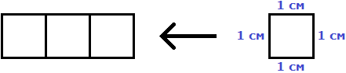
Справа представлен квадрат со стороной 1 см (он в данном случае является квадратной единицей). Если посмотреть сколько раз этот квадрат входит в прямоугольник, представленный слева, то обнаружим, что он входит в него три раза.
Следующий прямоугольник имеет площадь, равную шести квадратным сантиметрам:
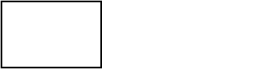
Это потому что в данном прямоугольнике содержится шесть квадратов, каждый из которых имеет сторону, равную одному сантиметру:
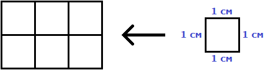
Допустим, потребовалось измерить площадь следующей комнаты:
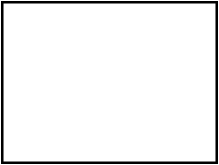
Определимся в каких квадратах будем измерять площадь. В данном случае площадь удобно измерить в квадратных метрах:
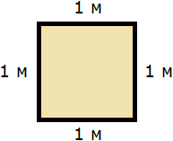
Итак, наша задача состоит в том, чтобы определить сколько таких квадратов со стороной 1 м содержится в исходной комнате. Заполним этим квадратом всю комнату:
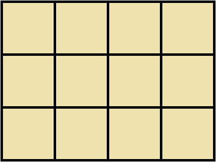
Видим, что квадратный метр содержится в комнате 12 раз. Значит, площадь комнаты составляет 12 квадратных метров.
Площадь прямоугольника
В предыдущем примере мы вычислили площадь комнаты, последовательно проверив сколько раз в ней содержится квадрат, сторона которого равна одному метру. Площадь составила 12 квадратных метров.
Комната представляла собой прямоугольник. Площадь прямоугольника можно вычислить перемножив его длину и ширину.
Чтобы вычислить площадь прямоугольника, нужно перемножить его длину и ширину.
Вернёмся к предыдущему примеру. Допустим, мы измерили длину комнаты рулеткой и оказалось, что длина составила 4 метра:
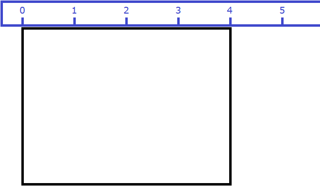
Теперь измерим ширину. Пусть она составила 3 метра:
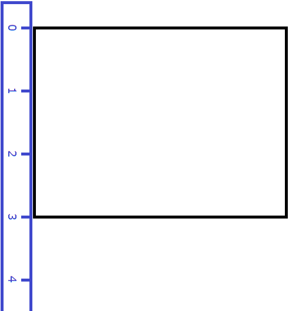
Умножим длину (4 м) на ширину (3 м).
\[4 \times 3 = 12\]
Как и в прошлый раз получаем двенадцать квадратных метров. Это объясняется тем, что измерив длину, мы тем самым узнаём сколько раз можно уложить в эту длину квадрат со стороной, равной одному метру. Уложим четыре квадрата в эту длину:
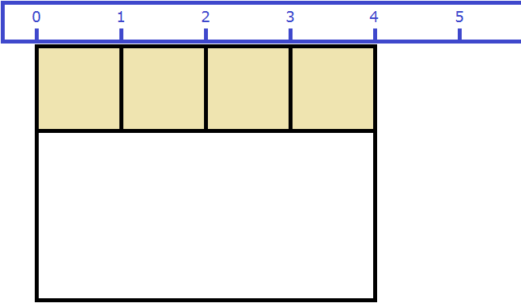
Затем мы определяем сколько раз можно повторить эту длину с уложенными квадратами. Это мы узнаём, измерив ширину прямоугольника:
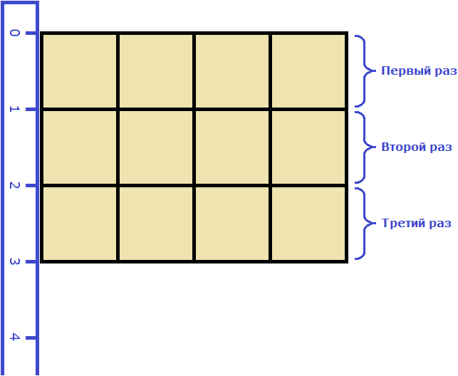
Площадь квадрата
Квадрат это тот же прямоугольник, но у которого все стороны равны. Например, на следующем рисунке представлен квадрат со стороной 3 см. Фраза «квадрат со стороной 3 см» означает, что все стороны равны 3 см
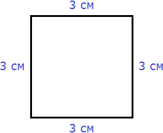
Площадь квадрата вычисляется таким же образом, как и площадь прямоугольника — длину умножают на ширину.
Вычислим площадь квадрата со стороной 3 см. Умножим длину 3 см на ширину 3 см
\[3 \times 3 = 9\]
В данном случае требовалось узнать сколько квадратов со стороной 1 см содержится в исходном квадрате. В исходном квадрате содержится девять квадратов со стороной 1 см. Действительно, так оно и есть. Квадрат со стороной 1 см, входит в исходный квадрат девять раз:
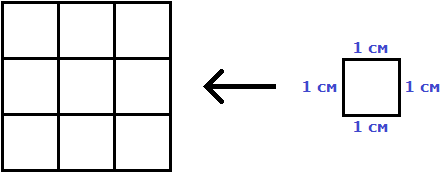
Умножив длину на ширину, мы получили выражение 3 × 3, а это есть произведение двух одинаковых множителей, каждый из которых равен 3. Иными словами выражение 3 × 3 представляет собой вторую степень числа 3. А значит процесс вычисления площади квадрата можно записать в виде степени 32.
Поэтому вторую степень числа называют квадратом числа. При вычислении второй степени числа a, человек тем самым находит площадь квадрата со стороной a. Операцию возведения числа во вторую степень по другому называют возведением в квадрат.
Обозначения
Площадь обозначается заглавной латинской буквой S (англ. Square — квадрат). Тогда площадь квадрата со стороной a см будет вычисляться по следующему правилу
S = a2
где a — длина стороны квадрата. Вторая степень указывает на то, что происходит перемножение двух одинаковых сомножителей, а именно длины и ширины. Ранее было сказано, что у квадрата все стороны равны, а значит равны длина и ширина квадрата, выраженные через букву a.
Если задача состоит в том, чтобы определить сколько квадратов стороной 1 см содержится в исходном квадрате, то в качестве единиц измерения площади нужно указывать см2. Это обозначение заменяет словосочетание «квадратный сантиметр».
Например, вычислим площадь квадрат со стороной 2 см.
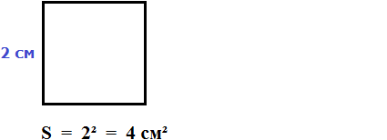
Значит, квадрат со стороной 2 см, имеет площадь, равную четырём квадратным сантиметрам:
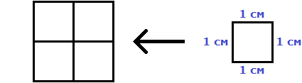
Если задача состоит в том, чтобы определить сколько квадратов со стороной 1 м содержится в исходном квадрате, то в качестве единиц измерения нужно указывать м2. Это обозначение заменяет словосочетание «квадратный метр».
Вычислим площадь квадрата со стороной 3 метра
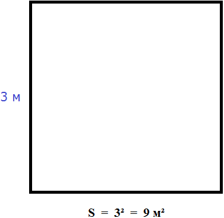
Значит, квадрат со стороной 3 м, имеет площадь равную девяти квадратным метрам:
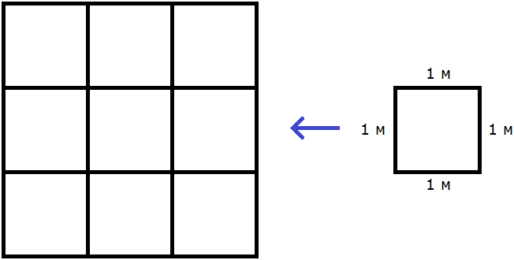
Аналогичные обозначения используются при вычислении площади прямоугольника. Но длина и ширина прямоугольника могут быть разными, поэтому они обозначаются через разные буквы, например a и b. Тогда площадь прямоугольника, длиной a и шириной b вычисляется по следующему правилу:
\[S = a \times b\]
Как и в случае с квадратом, единицами измерения площади прямоугольника могут быть см2, м2, км2. Эти обозначения заменяют словосочетания «квадратный сантиметр», «квадратный метр», «квадратный километр» соответственно.
Например, вычислим площадь прямоугольника, длиной 6 см и шириной 3 см
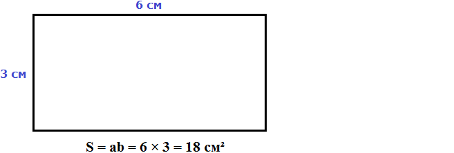
Значит, прямоугольник длиной 6 см и шириной 3 см имеет площадь, равную восемнадцати квадратным сантиметрам:
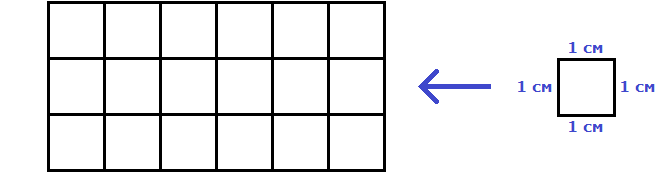
В качестве единицы измерения допускается использовать словосочетание «квадратных единиц». Например, запись S = 3 кв.ед означает, что площадь квадрата или прямоугольника равна трём квадратам, каждый из которых имеет единичную сторону (1 см, 1 м или 1 км).
Перевод единиц измерения площади
Единицы измерения площади можно переводить из одной единицы измерения в другую. Рассмотрим несколько примеров:
Пример 1. Выразить 1 квадратный метр в квадратных сантиметрах.
1 квадратный метр это квадрат со стороной 1 м. То есть все четыре стороны имеют длину, равную одному метру.
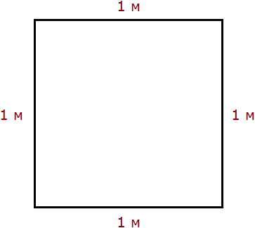
Но 1 м = 100 см. Тогда все четыре стороны тоже имеют длину, равную 100 см
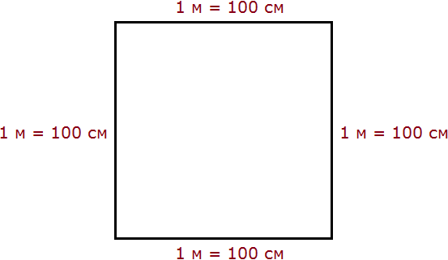
Вычислим новую площадь этого квадрата. Умножим длину 100 см на ширину 100 см или возведём в квадрат число 100
S = 1002 = 10 000 см2
Получается, что на один квадратный метр приходится десять тысяч квадратных сантиметров.
1 м2 = 10 000 см2
Это позволяет в будущем умножить любое количество квадратных метров на 10 000 и получить площадь, выраженную в квадратных сантиметрах.
Чтобы перевести квадратные метры в квадратные сантиметры, нужно количество квадратных метров умножить на 10 000.
А чтобы перевести квадратные сантиметры в квадратные метры, нужно наоборот количество квадратных сантиметров разделить на 10 000.
Например, переведём 100 000 см2 в квадратные метры. Рассуждать в этом случае можно так: «если 10 000 см2 это один квадратный метр, то сколько раз 100 000 см2 будут содержать по 10 000 см2»
100 000 см2 : 10 000 см2 = 10 м2
Другие единицы измерения можно переводить таким же образом. Например, переведём 2 км2 в квадратные метры.
Один квадратный километр это квадрат со стороной 1 км. То есть все четыре стороны имеют длину, равную одному километру. Но 1 км = 1000 м. Значит, все четыре стороны квадрата также равны 1000 м. Найдём новую площадь квадрата, выраженную в квадратных метрах. Для этого умножим длину 1000 м на ширину 1000 м или возведём в квадрат число 1000
S = 10002 = 1 000 000 м2
Получается, что на один квадратный километр приходится один миллион квадратных метров:
1 км2 = 1 000 000 м2
Это позволяет в будущем умножить любое количество квадратных километров на 1 000 000 и получить площадь, выраженную в квадратных метрах.
Чтобы перевести квадратные километры в квадратные метры, нужно количество квадратных километров умножить на 1 000 000.
Итак, вернёмся к нашей задаче. Требовалось перевести 2 км2 в квадратные метры. Умножим 2 км2 на 1 000 000
2 км2 × 1 000 000 = 2 000 000 м2
А чтобы перевести квадратные метры в квадратные километры, нужно наоборот количество квадратных метров разделить на 1 000 000.
Например, переведём 3 500 000 м2 в квадратные километры. Рассуждать в этом случае можно так: «если 1 000 000 м2 это один квадратный километр, то сколько раз 3 500 000 м2 будут содержать по 1 000 000 м2»
3 500 000 м2 : 1 000 000 м2 = 3,5 км2
Пример 2. Выразить 7 м2 в квадратных сантиметрах.
Умножим 7 м2 на 10 000
7 м2 = 7 м2 × 10 000 = 70 000 см2
Пример 3. Выразить 5 м2 13 см2 в квадратных сантиметрах.
5 м2 13 см2 = 5 м2 × 10 000 + 13 см2 = 50 013 см2
Пример 4. Выразить 550 000 см2 в квадратных метрах.
Узнаем сколько раз 550 000 см2 содержит по 10 000 см2. Для этого разделим 550 000 см2 на 10 000 см2
550 000 см2 : 10 000 см2 = 55 м2
Пример 5. Выразить 7 км2 в квадратных метрах.
Умножим 7 км2 на 1 000 000
7 км2 × 1 000 000 = 7 000 000 м2
Пример 6. Выразить 8 500 000 м2 в квадратных километрах.
Узнаем сколько раз 8 500 000 м2 содержит по 1 000 000 м2. Для этого разделим 8 500 000 м2 на 1 000 000 м2
8 500 000 м2 × 1 000 000 м2 = 8,5 км2
Единицы измерения площади земельных участков
Площади небольших земельных участков удобно измерять в квадратных метрах.
Площади более крупных земельных участков измеряются в арах и гектарах.
Ар (сокращённо: a) — это площадь равная ста квадратным метрам (100 м2). В виду частого распространения такой площади (100 м2) она стала использоваться, как отдельная единица измерения.
Например, если сказано что площадь какого-нибудь поля составляет 3 а, то нужно понимать, что это три квадрата площадью 100 м2 каждый, то есть:
3 а = 100 м2 × 3 = 300 м2
В народе ар часто называют соткой, поскольку ар равен квадрату, площадью 100 м2. Примеры:
1 сотка = 100 м2
2 сотки = 200 м2
10 соток = 1000 м2
Гектар (сокращенно: га) — это площадь, равная 10 000 м2. Например, если сказано что площадь какого-нибудь леса составляет 20 гектаров, то нужно понимать, что это двадцать квадратов площадью 10 000 м2 каждый, то есть:
20 га = 10 000 м2 × 20 = 200 000 м2
Прямоугольный параллелепипед и куб
Прямоугольный параллелепипед — это геометрическая фигура, состоящая из грáней, рёбер и вершин. На рисунке показан прямоугольный параллелепипед:
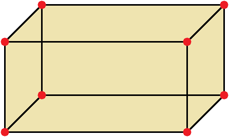
Желтым цветом показаны грáни параллелепипеда, чёрным цветом — рёбра, красным — вершины.
Прямоугольный параллелепипед обладает длиной, шириной и высотой. На рисунке показано где длина, ширина и высота:
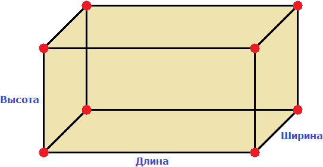
Параллелепипед, у которого длина, ширина и высота равны между собой, называется кубом. На рисунке показан куб:
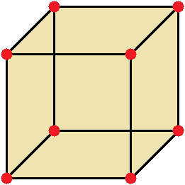
Объём геометрической фигуры
Объём геометрической фигуры — это число, которое характеризует вместимость данной фигуры.
Объём измеряется в кубических единицах. Под кубическими единицами подразумевают кубы длиной 1, шириной 1 и высотой 1. Например, 1 кубический сантиметр или 1 кубический метр.
Измерить объём какой-нибудь фигуры означает выяснить сколько кубических единиц вмещается в данную фигуру.
Например, объём следующего прямоугольного параллелепипеда равен двенадцати кубическим сантиметрам:
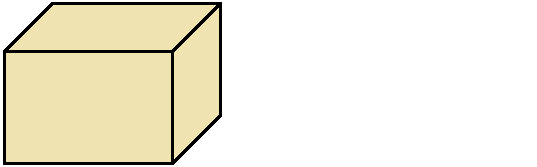
Это потому что в данный параллелепипед вмещается двенадцать кубов длиной 1 см, шириной 1 см и высотой 1 см:
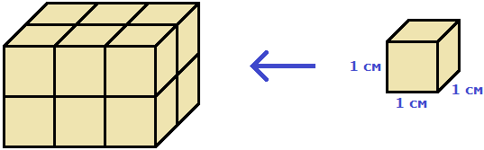
Объём обозначается заглавной латинской буквой V. Одна из единиц измерения объема это кубический сантиметр (см3). Тогда объём V рассмотренного нами параллелепипеда равен 12 см3
V = 12 см3
Объём любого параллелепипеда вычисляют следующим образом: перемножают его длину, ширину и высоту .
Объём прямоугольного параллелепипеда равен произведению его длины, ширины и высоты.
V = abc
где, a — длина, b — ширина, c — высота
Так, в предыдущем примере мы визуально определили, что объём параллелепипеда равен 12 см3. Но можно измерить длину, ширину и высоту данного параллелепипеда и перемножить результаты измерений. Мы получим тот же результат
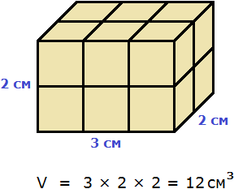
Объём куба вычисляется таким же образом, как и объём прямоугольного параллелепипеда — перемножают длину, ширину и высоту.
Например, вычислим объём куба, длина которого 3 см. У куба длина, ширина и высота равны между собой. Если длина равна 3 см, то равны этим же трём сантиметрам ширина и высота куба:
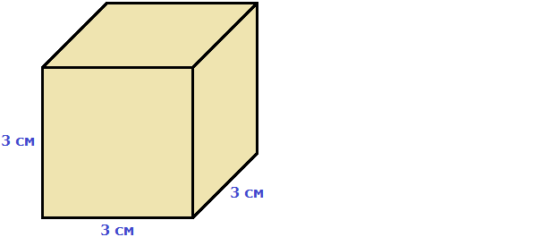
Перемножаем длину, ширину, высоту и получаем объём, равный двадцати семи кубическим сантиметрам:
V = 3 × 3 × 3 = 27 см³
Действительно, в исходный куб вмещается 27 кубиков длиной 1 см
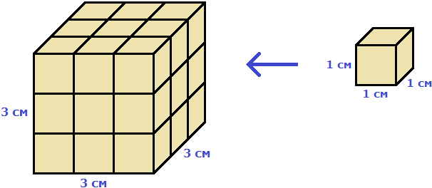
При вычислении объёма данного куба мы перемножили длину, ширину и высоту. Получилось произведение 3 × 3 × 3. Это есть произведение трёх сомножителей, каждый из которых равен 3. Иными словами, произведение 3 × 3 × 3 является третьей степенью числа 3 и может быть записано в виде 33.
V = 33 = 27 см3
Поэтому третью степень числа называют кубом числа. При вычислении третьей степени числа a, человек тем самым находит объём куба, длиной a. Операцию возведения числа в третью степень по другому называют возведением в куб.
Таким образом, объём куба вычисляется по следующему правилу:
V = a3
Где a — длина куба.
Кубический дециметр. Кубический метр
Не все объекты нашего мира удобно измерять в кубических сантиметрах. Например, объём комнаты или дома удобнее измерять в кубических метрах (м3). А объём бака, аквариума или холодильника удобнее измерять в кубических дециметрах (дм3).
Другое название одного кубического дециметра – один литр.
1 дм3 = 1 литр
Перевод единиц измерения объёма
Единицы измерения объёма можно переводить из одной единицы измерения в другую. Рассмотрим несколько примеров:
Пример 1. Выразить 1 кубический метр в кубических сантиметрах.
Один кубический метр это куб со стороной 1 м. Длина, ширина и высота этого куба равны одному метру.
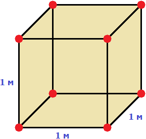
Но 1 м = 100 см. Значит, длина, ширина и высота тоже равны 100 см
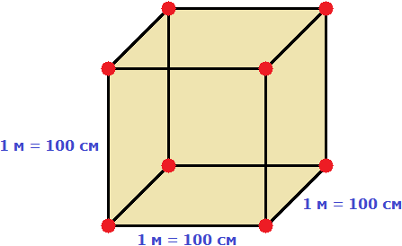
Вычислим новый объём куба, выраженный в кубических сантиметрах. Для этого перемножим его длину, ширину и высоту. Либо возведём число 100 в куб:
V = 1003 = 1 000 000 см3
Получается, что на один кубический метр приходится один миллион кубических сантиметров:
1 м3 = 1 000 000 см3
Это позволяет в будущем умножить любое количество кубических метров на 1 000 000 и получить объём, выраженный в кубических сантиметрах.
Чтобы перевести кубические метры в кубические сантиметры, нужно количество кубических метров умножить на 1 000 000.
А чтобы перевести кубические сантиметры в кубические метры, нужно наоборот количество кубических сантиметров разделить на 1 000 000.
Например, переведём 300 000 000 см3 в кубические метры. Рассуждать в этом случае можно так: «если 1 000 000 см3 это один кубический метр, то сколько раз 300 000 000 см3 будут содержать по 1 000 000 см3»
300 000 000 см3 : 1 000 000 см3 = 300 м3
Пример 2. Выразить 3 м3 в кубических сантиметрах.
Умножим 3 м3 на 1 000 000
3 м3 × 1 000 000 = 3 000 000 см3
Пример 3. Выразить 60 000 000 см3 в кубических метрах.
Узнаем сколько раз 60 000 000 см3 содержит по 1 000 000 см3. Для этого разделим 60 000 000 см3 на 1 000 000 см3
60 000 000 см3 : 1 000 000 см3 = 60 м3
Вместимость бака, банки или канистры измеряют в литрах. Литр это тоже единица измерения объема. Один литр равен одному кубическому дециметру.
1 литр = 1 дм3
Например, если вместимость банки составляет 1 литр, это значит что объём этой банки составляет 1 дм3. При решении некоторых задач может быть полезным умение переводить литры в кубические дециметры и наоборот. Рассмотрим несколько примеров.
Пример 1. Перевести 5 литров в кубические дециметры.
Чтобы перевести 5 литров в кубические дециметры, достаточно умножить 5 на 1
5 л × 1 = 5 дм3
Пример 2. Перевести 6000 литров в кубические метры.
Шесть тысяч литров это шесть тысяч кубических дециметров:
6000 л × 1 = 6000 дм3
Теперь переведём эти 6000 дм3 в кубические метры.
Длина, ширина и высота одного кубического метра равны 10 дм
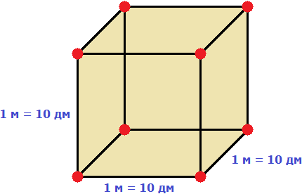
Если вычислить объём этого куба в дециметрах, то получим 1000 дм3
V = 103= 1000 дм3
Получается, что одна тысяча кубических дециметров соответствует одному кубическому метру. А чтобы определить сколько кубических метров соответствуют шести тысячамл кубических дециметров, нужно узнать сколько раз 6 000 дм3 содержит по 1 000 дм3
6 000 дм3 : 1 000 дм3 = 6 м3
Значит, 6000 л = 6 м3.
Таблица квадратов
В жизни часто приходиться находить площади различных квадратов. Для этого каждый раз требуется возводить исходное число во вторую степень.
Квадраты первых 99 натуральных чисел уже вычислены и занесены в специальную таблицу, называемую таблицей квадратов.

Первая строка данной таблицы (цифры от 0 до 9) это единицы исходного числа, а первый столбец (цифры от 1 до 9) это десятки исходного числа.
Например, найдём квадрат числа 24 по данной таблице. Число 24 состоит из цифр 2 и 4. Точнее, число 24 состоит из двух десятков и четырёх единиц.
Итак, выбираем цифру 2 в первом столбце таблицы (столбце десятков), а цифру 4 выбираем в первой строке (строке единиц). Затем, двигаясь вправо от цифры 2 и вниз от цифры 4, найдём точку пересечения. В результате окажемся на позиции, где располагается число 576. Значит, квадрат числа 24 есть число 576

242 = 576
Таблица кубов
Как и в ситуации с квадратами, кубы первых 99 натуральных чисел уже вычислены и занесены в таблицу, называемую таблицей кубов.
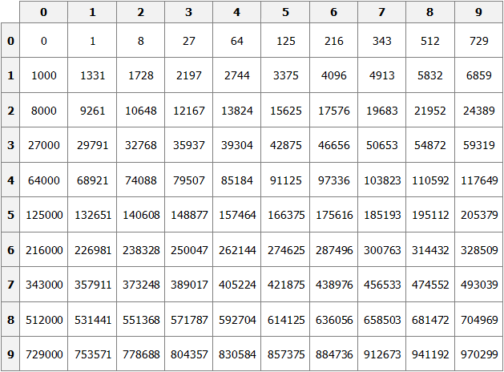
Куб числа по таблице определяется таким же образом, как и квадрат числа. Например, найдём куб числа 35. Это число состоит из цифр 3 и 5. Выбираем цифру 3 в первом столбце таблицы (столбце десятков), а цифру 5 выбираем в первой строке (строке единиц). Двигаясь вправо от цифры 3 и вниз от цифры 5, найдём точку пересечения. В результате окажемся на позиции, где располагается число 42875. Значит, куб числа 35 есть число 42875.
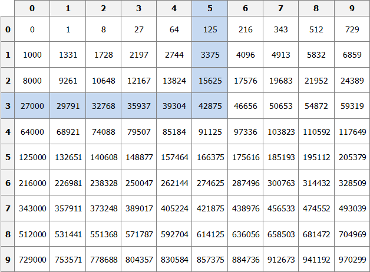
353 = 42875
Задания для самостоятельного решения
Показать решение
Решение
\[P = 2(a + b)\]
a = 6, b = 2
P = 2(6 + 2) = 12 + 4 = 16 см
Ответ: периметр прямоугольника равен 16 см.
Показать решение
Решение
S = ab
a = 6, b = 2
S = 6 × 2 = 12 см2
Ответ: площадь равна 12 см2.
Показать решение
Решение
\[S = ab S = 12, a = 6, b = x 12 = 6 \times x x = 2\]
Ответ: ширина прямоугольника составляет 2 см.
Показать решение
Решение
S = a2
a = 8
S = 82 = 64 см2
Ответ: площадь квадрата со стороной 8 см равна 64 см2
Показать решение
Решение
V = abc
a = 6, b = 4, c = 3
V = 6 × 4 × 3 = 72 см3.
Ответ: объем прямоугольного параллелепипеда, длина которого 6 см, ширина 4 см, высота 3 см равен 72 см3
Показать решение
Решение
V = abc
V = 200, a = 10, b = 5, c = x
200 = 10 × 5 × x
200 = 50x
x = 4
Ответ: высота прямоугольного параллелепипеда равна 4 см.
Показать решение
Решение
Число 4 отражает площадь, засеянную пшеницей. А число 5 отражает площадь, засеянную льном.
Сказано что площади, засеянные пшеницей и льном пропорциональны этим числам.
Проще говоря, во сколько раз изменяются числа 4 или 5, во сколько же раз изменится и площадь, которая засеяна пшеницей или льном. Льном засеяно 15 га. То есть число 5, которое отражает площадь, засеянную льном, изменилось в 3 раза.
Тогда число 4, которое отражает площадь засеянную пшеницей, нужно увеличить в три раза
4 × 3 = 12 га
Ответ: пшеницей засеяно 12 га.
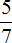
длины, а высота – 0,1 длины. Определите сколько тонн зерна вмещает зернохранилище, если 1 м3 его весит 740 кг.Показать решение
Решение
a — длина
b — ширина
c — высота
a = 42 м 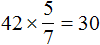
b =
c = 42 × 0,1 = 4,2 м
Определим объем зернохранилища:
V = abc = 42 × 30 × 4,2 = 5292 м3
Определите сколько тонн зерна вмещает зернохранилище:
5292 × 740 = 3916080 кг
Переведём килограммы в тонны:
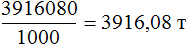
Ответ: зернохранилище вмещает 3916,08 тонн зерна.
Показать решение
Решение
Определим сколько литров в минуту вливается через вторую трубу:
25 л/мин × 0,75 = 18,75 л/мин
Определим сколько литров в минуту вливается в бассейн через обе трубы:
25 л/мин + 18,75 л/мин = 43,75 л/мин
Определим сколько литров воды будет залито в бассейн за 13 ч 32 мин
43,75 × 13 ч 32 мин = 43,75 × 812 мин = 35 525 л
1 л = 1 дм3
35 525 л = 35 525 дм3
Переведём кубические дециметры в кубические метры. Это позволит вычислит объем бассейна:
35 525 дм3 : 1000 дм3 = 35,525 м3
Зная объём бассейна можно вычислить высоту бассейна. Подставим в буквенное уравнение V=abc имеющиеся у нас значения. Тогда получим:
\[V = 35,525 a = 5.8 b = 3.5 c = x\]
35,525 = 5,8 × 3,5 × x
35,525 = 20,3 × x
x = 1,75 м
с = 1,75
Ответ: высота (глубина) бассейна составляет 1,75 м.
Понравился урок?
Вступай в нашу новую группу Вконтакте и начни получать уведомления о новых уроках